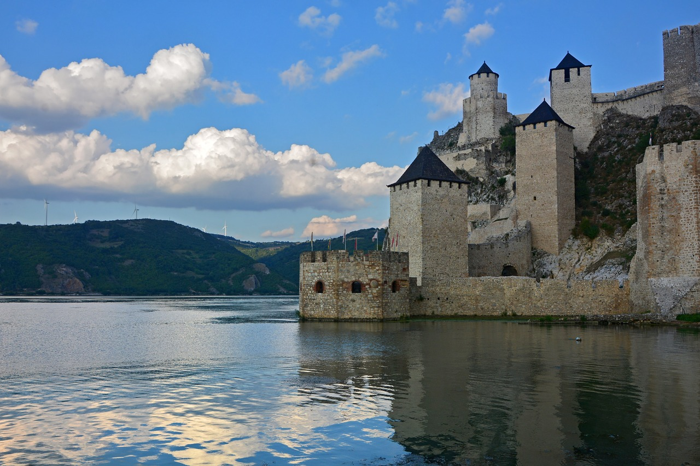

Top 15 Best Places to Visit in SerbiaFrom vivacious urban attractions to quiet and peaceful towns and villages that dot the lovely countryside, Serbia has something to offer everyone. Serbia is highly recommended if you are considering traveling to the Balkans because it is also regarded for being one of the more affordable locations. Along with a variety of interesting historical and cultural sites, this region is home to some of the world's top music festivals, a hopping nightlife, and swinging cafe and bar scenes. Whatever you do, don't let Serbia's somewhat painful past deter you. This is a location that cannot be missed in the current age.
If you want to experience an adrenalin rush in the great outdoors then head to the west of Serbia to explore its wealth of majestic scenery and extreme sports options. The Drina River is one of these, and it's a great place for people who want to try white water rafting. You can sign up with a number of local businesses that will take you out on the water with trained guides who will teach you how to raft safely and talk to you about the varied flora and fauna in the area as you float by. The picturesque village of Sirogojno, which is close to Mokra Gora, has an open-air museum or self-described "ethnic village" that comprises historically accurate buildings including a traditional Serbian dairy, an inn, and a bakery. Locals are present to showcase regional traditional arts and crafts. Traditional Serbian cuisine lovingly produced from traditions passed down through generations can be found in Sirogojno, which is reputed to be a great site to experience the local fare and beverages. 'Rakija', a Serbian brandy, is available if you want to sample the local libation. Don't miss Drvengard, or "Timber Town," another attraction in the Mokra Gora valley if you want to experience something a little different in Serbia. The hamlet has been standing ever since and is now a fully operational ethnic open-air museum. The village was really built as a film set by local director Emir Kusturica for the movie "Life is a Miracle." Drvengrad has a strong commitment to the arts, and throughout the year there are film festivals, music performances, art lessons, and workshops. Mokra Gora Wet Mountain in English The settlement of Mokra Gora, which shares the same name with the lush valley and stunning scenery, is famous for its historic railroad. A must-do activity in this village is to visit the famed railway station and take a train trip through the Mokra Gora valley, taking in all the sights along the route. The village has been restored to approximate its previous status. At the conclusion of the journey, the figure-eight-shaped track neatly circles back to Mokra Gora. Novi Sad, the capital of the Vojvodina Province and the second-largest city in Serbia, is a must-visit destination for tourists. The city is perhaps best known for its imposing landmark, the Petrovaradin Fortress, a protected building from the 17th century that keeps watch over the city, as well as the EXIT music festival, which is held every year in July and is regarded as one of the most important summer music festivals in all of Europe. There are several picturesque locations in the city, such as the Varadin Bridge that spans the Danube. If you want, you may also take river cruises to view the city from the water. Visit the Stari Grad neighborhood of the city if you enjoy history and culture. Here, you'll find war memorials, museums, art galleries, bars, and cafes that make it the ideal location to explore the streets and take it all in. Oplenac, in western Serbia, offers a completely different view of the country, and is an important cultural and historical site due to the St George Church and the Oplenac Mausoleum. The church, also known as Oplenac Church, is an Orthodox church that was constructed in the 1900s and serves as both King Peter I's final resting place and the tomb for 26 members of the Karadordevic royal line. Due in large part to the intricate and magnificent mosaics that adorn the inside, the church and tomb are regarded as some of Serbia's most attractive structures. Make sure to come to Leskovac in southern Serbia for the meat if you only do one thing there. The annual Rotiljijada or Barbecue Week, which takes place in September and is a five-day event honoring all things grilled pork, draws throngs of tourists to the city. The main part of the city is blocked off to traffic, food stalls are set up for vendors to display their wares, cooking competitions, music events, and performances are all held to completely embrace the meaty theme. Serbians throng to the Zlatar Mountain Range, which is home to Serbia's highest peak, Golo brdo, to take advantage of everything the area has to offer. The region is dotted with meadows, lakes, and forests, and because of its high elevation and clean air, it has become known as a kind of spa destination for people seeking to unwind and connect with nature distant from the growing metropolis. Winter sports enthusiasts can delight in skiing during the colder months on the numerous slopes that are accessible through a dedicated ski lift that offers breathtaking views of the beautiful valleys below. Along with three man-made lakes where boating, rafting, and fishing are permitted, the area is also home to a number of charming wooden churches and monasteries. Niš, Serbia's third-largest city and its southernmost location, is renowned for being a university town and the birthplace of the Roman emperor Constantine. The Memorial of Constantine the Great, which is prominently displayed in the city center, is only one of several historical sites that give the city a laid-back and fun-loving atmosphere. Another place of historic note in Niš is the Niš Fotress, built in the 18th century, and it is here that the two sides of the city expertly meet, as the area in front of the fortress is home to rows of cafes that are much loved by the student population looking for some rest and relaxation. Lepenski Vir is a well-known site on the central Balkan Peninsula that dates from roughly 9,000 to 6,000 BC and has significant artifacts that aspiring archaeologists are sure to like. Along with shrines and river stones allegedly representing ancient gods, the site includes displaced and preserved houses, sculptures, many of which have fish motif, and other artifacts. The website also features figurines of expressionistic-styled prehistoric men and women from 7,000 BC. Whatever your skill level or prior experience, head to the Kopaonik mountain range if you enjoy winter sports and chance to be in Serbia between December and April. Prepare to hit the slopes. At the Kopaonik Ski Resort, there are a whopping twenty-four ski lifts that serve the region. There are classifications of slopes for every ability level, as well as skiing and snowboarding options. There is still a lot to do in Kopaonik if you happen to be traveling outside of the ski season because you can go hiking, mountain climbing, and bird viewing. The numerous wooden structures in the area, like as churches and timbre shrines, are also of attractive to hikers and ramblers. Belo brdo, or "White Hill," is an archaeological site in Vinca, an area outside of Belgrade, and it is one of the most significant locations in Serbian history. The region gained notoriety due to the archaeological discoveries made in Vinca, many of which were made of stone or bone and included statues, ornaments, and drinking vessels. Visitors can tour the site as well as the museum that displays these Neolithic artifacts, which are thought to have been made between 5,000 and 4,000 BC. The local docks are well-known for the fish eateries that dot the neighborhood for visitors who wish to try some of the freshly caught fish on offer. Vinca is also well-known as a stopping off point for river cruises along the Danube. Serbia is well known for its spa towns, which were formerly the preferred retreat of Roman emperors. None is more well known than the town of Sokobanja in the country's east. There is a public "hamam" or steam chamber that dates from the 17th century, and locals and celebrities frequent this location for the thermal waters that are supposed to have profoundly restorative effects. Along with the hot springs, Sokobanja attracts tourists for its crisp, clean air, which is supposed to be high in negative ions and free of air pollution due to its higher elevation. As a result, the term "climatic spa" was coined to characterize the therapeutic benefits of breathing in fresh air. The Fruka Gora Mountain, commonly referred to as the "Jewel of Serbia," is a mountain range in the Syrmia region that sits on the border with neighboring Croatia. Fruka Gora Park, a protected area in the alpine region, is home to numerous vineyards and wineries that are well worth a visit for wine connoisseurs. The area is famous for strolling, trekking, climbing, and picnics, but the Orthodox monasteries that are dispersed throughout the countryside—some of which are reported to date back to the 12th century and are now protected—may be the area's biggest lure. Many tourists come to this area because of the breathtaking beauty and the relaxed pace that allows you to explore the area at your own time. Serbia’s capital Belgrade is located at the intersection between the Danube and the Sava rivers, and is an eclectic, if sometimes arresting, mix of old and new styles, from 19th century buildings to Art Nouveau structures. There is a little bit of everything in Belgrade, including the dominating Kalemegdan Fortress, located in Kalemegdan Park, the remains of which stand today. The park is also home to the Military Museum that even features the remnants of a US Stealth Bomber for those keen to learn about the military history of the region. Other than the citadel, there are numerous Orthodox churches, colorful facades, and charming squares. However, for something more surprising, visit Ada Ciganlija, often known as the "Gypsy Island," in the south of Belgrade, where you'll find yourself in a kind of self-styled beach resort. Along the Sava's banks are beaches where you may go swimming, engage in water sports like water skiing, and enjoy a sizable parkland area where you can observe the local flora and fauna. |